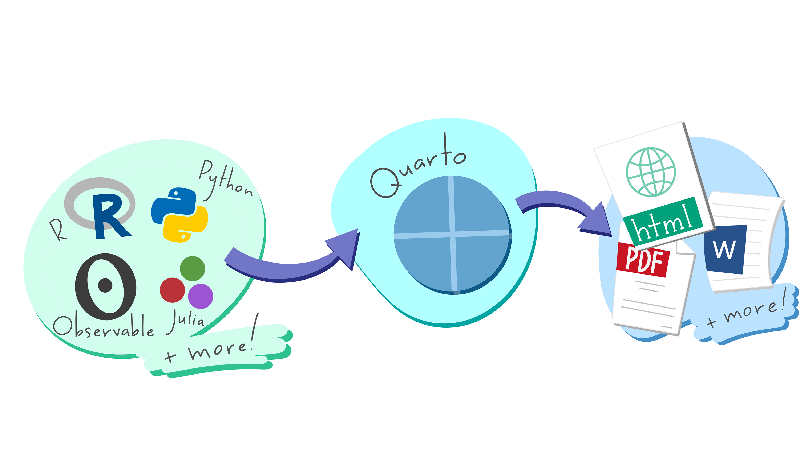
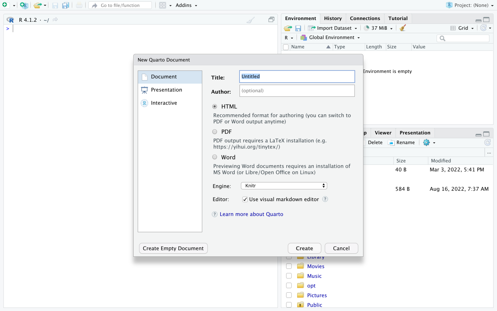
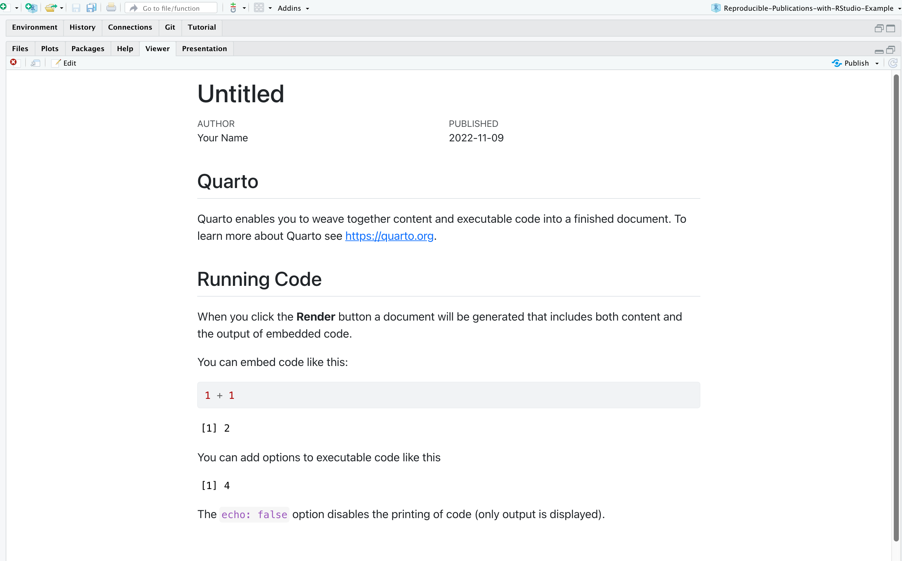

3 Using Quarto Documents
3.1 What is a Quarto Document?1
This semester you will be using the statistical programming language R in RStudio, an integrated development environment (or IDE). But where will we put the code? We will use an interactive document, Quarto. Quarto documents can contain both code, that we can execute to run data analysis and create graphs, and text that discusses the work we have done.

Quarto documents are interactive in that we can run our analysis and then write up explanations of it. Quarto documents can be rendered, running the code and producing a report in a specific format such as Word, .PDF, .HTML, and many other formats.
3.1.1 Creating a Quarto Document
We will mostly be working with templates that you can work to fill in. But creating a Quarto document is easy. Starting and Naming a New Quarto Document Start a new Quarto document in RStudio by clicking File > New File > Quarto Document…

You may name your Quarto document as “my_first_first_qmd”.
New Quarto files will have a generic template unless you click the “Create Empty Document” in the bottom left-hand corner of the dialog box.
We will keep all pre-selected options: HTML as the output, knitr engine and the visual editor. The output might be changed at anytime and we can easily switch between the visual and the source editor. Knitr will be the engine used to execute the R codes and to render the document in Rstudio.
If you see this default text you’re good to go:
3.2 Working in Quarto Documents
You can work in two modes: the visual editor or the source editor. Most of you will want to work in visual editor mode.
3.2.1 The Visual Editor vs. the Source Editor
The visual editor follows the WYSIWYG “what you see is what you get” approach similarly to Word or Google docs that lets you choose styling options from the menu (before you had to either have the markdown code memorized or look it up for each of your styling choices). Another major benefit is that the new editor renders the styling in real time so you can preview your paper before rendering to your output format. The image directly above shows the visual editor.
In the visual editor you can use editor tool bar at the top of the document to format your document. Here are the options.

If you toggle the source button, you will display your Quarto document in the “source editor” mode. Notice the symbols scattered throughout the text (#, *, <>). Those are examples of Markdown syntax, an easy and quick, human-readable markup language for document styling.
3.2.2 Writing in Markdown
If you prefer to write in the source editor, you will need to use a version of Markdown, called RMarkdown. Moving between the source and visual editor should help you get a sense of the code.
3.2.3 Code Chunks
Whether you are working in the visual or the source editor, you need to put place your R code in sections that are marked to run the code named “code chunks”.
You will need to put everything you need to complete an assignment in a code chunk. This includes loading packages and data, and the code for the analyses and graphs you want to run.
You can run individual code chunks by clicking on the green triangles in each code chunk.
3.3 Rendering Quarto Documents
Simply put, rendering is the process of converting a document into a file format or a medium that is paginated or has the concept of pages. Clicking the render button will compile the code, check for errors, and finally, output the type of file indicated in your yaml header. You may select the option "Render on Save" to see a preview of your document every time you save edits. Attention: your qmd document may not run and render as your indicated output if there are any errors in the document so it also functions somewhat as a code checker.
The rendered document will appear in the right side of RStudio in the Viewer area. 
3.4 Exporting Quarto Documents
Complete once I know whether I am using on individual computers or RStudio Cloud.
3.5 Learning More About Quarto
Much of this section has been used under Creative Commons license from the Data Carpentry course, Introduction to Reproducible Publications in Rstudio.↩︎